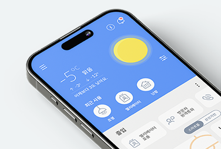
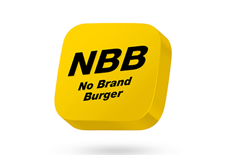
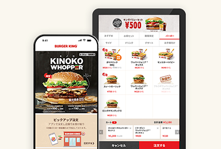
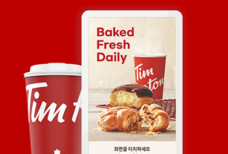
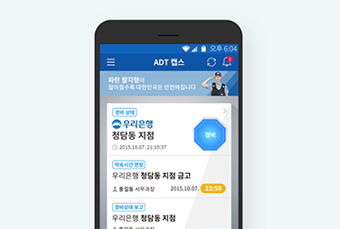

Semin Kim
EN
ABOUT
WORK
CONTACT
I Design
Inside & Outside of Service
UX Consulting
Planning & Wireframe
GUI & Interaction
WORK

HDC IoT APP
UX Concept, UI

No Brand Burger APP
UX Concept, UI

Burgerking Japan Omni Channel
UX, GUI
Kumon APP
UI, GUI

Tim Hortons Kiosk
UX Concept, UI

ADT Caps APP
UI, GUI